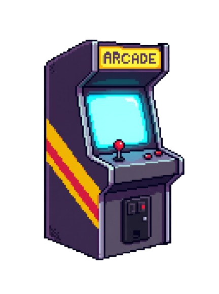

O StreetTracker revive a era de ouro das disputas locais, trazendo a emoção do fliperama para o conforto da sua casa com um placar definitivo para as suas partidas de Street Fighter II e uma Dashboard com dados acumulados.
Veja o que o sistema faz